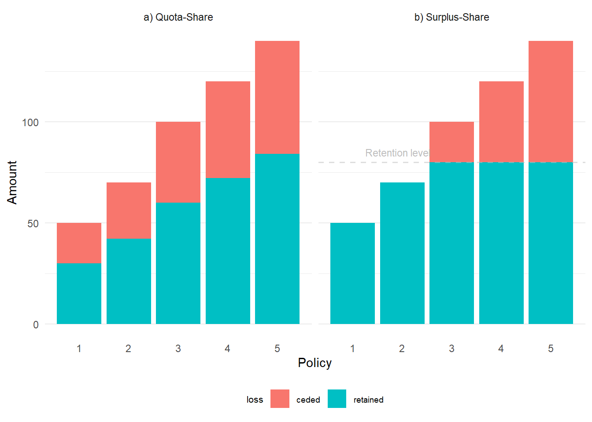
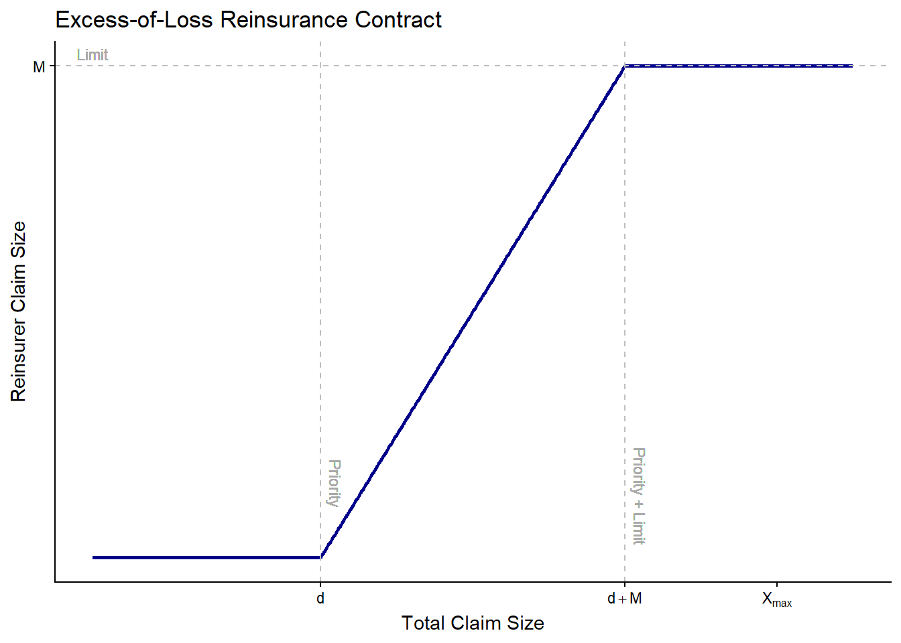
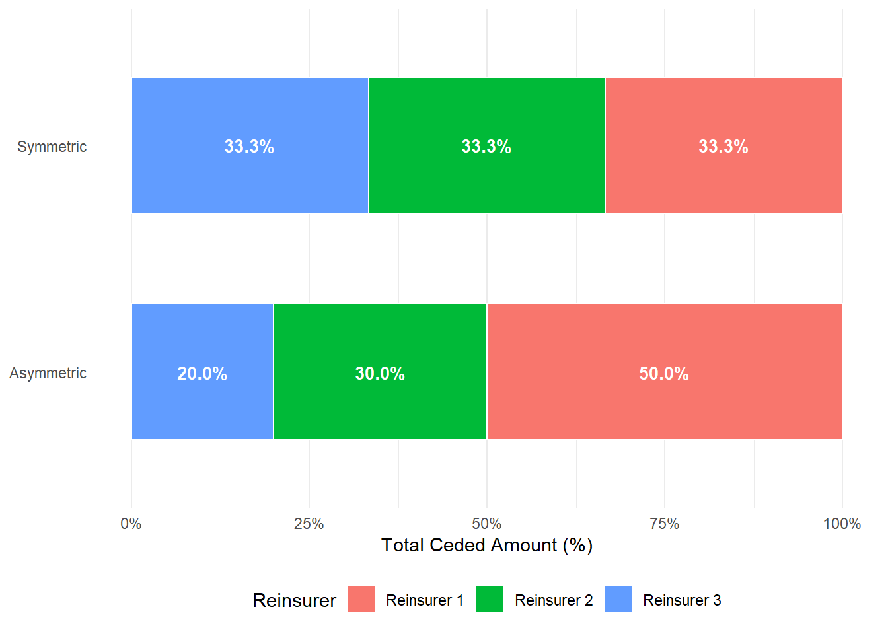
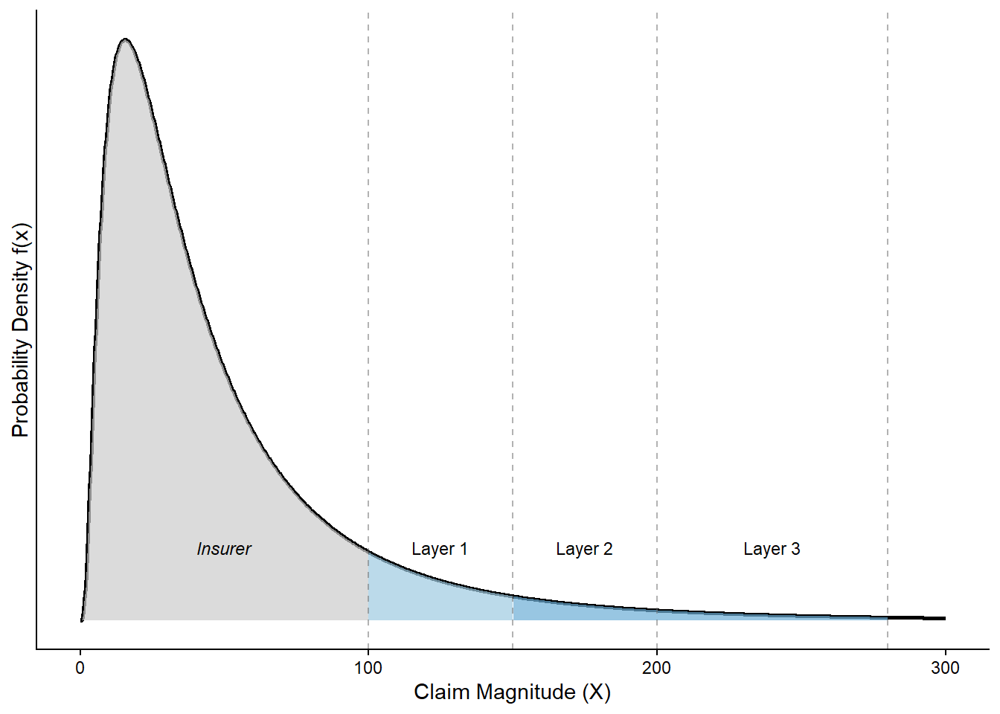

1 Introduction to Reinsurance
1.1 Reinsurance
Financial theory suggests that the use of reinsurance, under the conditions of capital market equilibrium, is redundant and not necessary for diversified and widely held firms, as these entities are able to pool risks internally and access capital markets for financing when needed, representing a reinsurance specific application of the broader principle of corporate hedging irrelevance under frictionless capital market (Modigliani and Miller (1958), doherty_tinic1981). However, as shown in Mayers and Smith (1982), market imperfections such as bankruptcy costs, tax convexity, and agency conflicts create a rational corporate demand for insurance and risk transfer. Froot, Scharfstein, and Stein (1993) further demonstrate that costly external financing makes hedging strategies value-enhancing: by smoothing internal cash flows, reinsurance enables insurers to fund investment opportunities without resorting to expensive capital markets. These theoretical foundations establish reinsurance as a rational response to real-world frictions. In this context, reinsurance plays an instrumental role in enhancing diversification beyond the boundaries of solely insurance, providing financial and operational flexibility in addition to the transfer of risk.
From a financial perspective, reinsurance impacts an insurer’s surplus management and financing capacity. Since insurers must establish unearned premium reserves upon collecting premiums, their ability to underwrite new policies is limited by surplus levels. Reinsurance mitigates such constraint by reducing the amount of unearned premium reserves requirements, increasing the underwriting capacity, both in terms of single-risk exposure and the volume of contracts written. This allows insurers to underwrite policies that might otherwise exceed their risk tolerance or capital base, and to remain competitive in high-volume lines of business.
An additional benefit is the stabilization of loss experience over time. Due to economic, environmental, and portfolio-specific factors, underwriting results can vary significantly on a yearly basis. Reinsurance enables insurers to smooth these fluctuations, functioning similarly to a contingent capital mechanism whereby reinsurers absorb part of the losses in bad years and receive premiums in better years (Webb, Property, and Underwriters (1984)). This rationale is formalized by Plantin and Rochet (2007), who model the optimal demand for reinsurance as a function of the insurer’s liability structure and regulatory capital constraints, showing that reinsurance serves as a risk transfer mechanism rather than a generic contingent capital facility.
Catastrophe protection is another key driver for reinsurance usage. In the event of natural disasters or other extreme events, reinsurance shields the primary insurer from potentially severe financial consequences. Furthermore, reinsurance provides underwriting assistance through access to specialized expertise, advanced actuarial data, and claims management capabilities. This knowledge is especially valuable for insurers that expand into new product lines, geographic territories, or unconventional risk classes. Reinsurance also facilitates the entry and exit from specific markets, facilitating the cessation of operations in certain lines of business, allowing the transfer of entire portfolios without sudden contract cancellations, which could result in reputational and regulatory backlash.
In combination, recent literature highlights that business line diversification, particularly across life and non-life segments, can contribute to systemic risk mitigation. As demonstrated by Regele (2022), insurers that engage in both life and non-life insurance (multi-line insurers) contribute less to systemic risk compared to monoline insurers. This is largely due to a coinsurance effect arising from the low correlation between life and non-life insurance cash flows. While life insurance typically involves long-term, predictable liabilities, non-life insurance is characterized by short-term, volatile claims. The combination of these underwriting profiles leads to more stable cash flows and reduces equity volatility, decreasing the likelihood of financial distress. Empirical findings indicate that insurers with a line of business mix of roughly 54% life and 46% non-life insurance exhibit the lowest contribution to systemic risk. This insight suggests that diversification not only enhances firm-level stability, but also serves a macro-prudential function, helping the broader financial system stability.
1.2 Facultative and Treaty Reinsurance
Reinsurance agreements can be broadly categorized in two main forms: facultative and treaty reinsurance. These two mechanisms differ significantly in terms of their application, risk exposure, contractual complexity, and strategic applications. Facultative reinsurance is characterized by its use in the coverage of individual risks, where the primary insurer selectively acquires reinsurance coverage for specific risks on a case-by-case basis. In contrast, treaty reinsurance involves the cession of all risks within a defined class of insurance policies, typically structured through a predetermined agreement that applies to a broader portfolio of exposures Outreville (1998). The distinction between these two arrangements is critical, as it reflects the differing risk management strategies, operational requirements, and the degree of control retained by the primary insurer. Facultative reinsurance provides highly customized coverage and is typically used in situations involving large or unusual risks. On the other hand, treaty reinsurance emphasizes automation and scalability, supporting the transfer of homogeneous risks with reduced transactional friction.
1.2.1 Facultative Reinsurance
Facultative reinsurance is a transactional form of reinsurance in which the ceding insurer offers a specific individual risk to a reinsurer, who then has the discretion to accept or decline all or part of that risk. As defined by Thompson (1966),
“Facultative reinsurance involves a practice between insurance companies whereby a ceding company offers special or individual risks that it decides to reinsure to a proposed reinsurer which has the free choice to accept part or all, or may reject part or all, of risks offered”.
Unlike treaty reinsurance – which applies to a predefined pool of risks under a blanket agreement – facultative reinsurance is arranged on a case-by-case basis. Each contract is negotiated separately, and each risk is individually underwritten by the reinsurer. There is no binding obligation on either party to enter into the agreement: the primary insurer is not required to cede the risk, nor is the reinsurer obliged to accept it. This mutual optionality makes facultative reinsurance a flexible tool for managing non-standard exposures or covering risks that are not included in existing treaty agreements.
One of the principal advantages of facultative reinsurance lies in its assessment process. Since each risk is addressed individually, the reinsurer can tailor terms, pricing, and conditions to reflect the specific characteristics and loss potential of the exposure. This versatility enables more accurate risk selection and premium adequacy, especially in high-severity or complex underwriting situations, such as industrial facilities, large infrastructures, or natural catastrophe.
However, the facultative model also has significant limitations in terms of efficiency and cost. Each contract entails extensive underwriting review, requiring the ceding company to submit detailed information and risk documentation. The process often involves multiple rounds of negotiations and may include multiple negotiations with several reinsurers to obtain the most favorable terms. As a result, facultative reinsurance can be time-consuming, labor-intensive, and administratively burdensome. These complexities often render facultative placements less suitable for high frequency or commoditized lines of business.
Facultative reinsurance is also instrumental in enhancing the insurer’s overall risk diversification. It allows to offload large exposures that would otherwise concentrate risk within their book of business, and can be employed to supplement treaty arrangements by covering risks that exceed treaty limits or fall outside the treaty scope, functioning as a second layer of coverage.
In practice, facultative agreements are generally short-term and often structured as single-event transactions tied to the duration of the insurance policy, providing tailored, transaction specific coverage for exceptional risks that require individualized attention.
1.2.2 Treaty Reinsurance
Treaty reinsurance is a contractual arrangement whereby the reinsurer agrees in advance to accept a defined portion of all risks falling within a specified portfolio of policies. Treaty reinsurance functions as a blanket agreement, covering all risks written by the ceding company within the scope of the treaty. This acceptance of risk optimizes the reinsurance process and serves as a pivot for efficient and scalable risk transfer in the insurance industry (Rejda and McNamara (2021)).
Treaty reinsurance is designed to improve operational efficiency, promote long-term strategic partnerships between insurers and reinsurers, and support the growth of the insurer’s underwriting activities. The agreement typically covers terms and conditions related to the type of business and risks covered, the attachment points, limits, premium-sharing quotas, and claim procedures. These stipulations are set out in a legally binding reinsurance treaty, which governs the relationship over a fixed period.
One of the several advantages associated with treaty contracts is enhanced operational efficiency, due to the fact that treaty arrangements do not require risk-by-risk negotiation, significantly reducing administrative costs and transaction time, enabling primary insurers to focus on core underwriting activities and client service activities. Similarly to facultative reinsurance, treaty arrangements help smooth loss exposure over time, sharing large-scale underwritten losses and extreme claims volatility. Additionally, treaty reinsurance often establishes deeper relationships between cedants and reinsurers, promoting cooperation in areas such as pricing, underwriting expertise, and claims handling. This relationship often includes value-added services from the reinsurer, including actuarial support, product development, and portfolio analysis.
Despite its advantages, treaty reinsurance presents some limitations and drawbacks. The most prominent is the potential for adverse selection, whereby the ceding insurer includes disproportionately risky policies within the treaty. Therefore, reinsurers conduct rigorous due diligence and often require detailed portfolio analytics before entering a treaty agreement. Another potential flaw is the lack of flexibility. Once a treaty agreement is in force, it applies uniformly across the portfolio, which may lead to inefficiencies if certain risks become unwanted but cannot be excluded. Thus, there is limited scope for tailoring the contract to individual risks. Treaty reinsurance provides an essential tool in the insurance industry, making it the preferred method to manage routine high-volume exposures.
Reinsurance agreements, whether in facultative or in treaty form, can be categorized as proportional or non-proportional type.
1.3 Proportional and Non-proportional Reinsurance
Proportional reinsurance involves one or more reinsurers taking a pre-agreed percentage share of the premiums and liabilities of each policy written by the insurer. Non-proportional reinsurance, on the other hand, reimburses losses suffered above a fixed sum. Under proportional reinsurance, primary insurer and reinsurer share premiums and losses by a ratio defined in their contract. The reinsurer’s share of the premium is directly proportional to its obligation to pay any claim. Moreover, the reinsurer compensates the ceding insurer for a portion of its administrative and acquisition costs by paying a commission, typically expressed as a percentage of the original premium.
Non-proportional reinsurance was introduced in the 1970s as an alternative and a complement to traditional proportional forms of coverage. Non-proportional forms of reinsurance - meaning coverage with no fixed or pre-determined split of premiums and losses - are mainly used to provide protection against the biggest and accumulated losses that can potentially jeopardize insurer’s solvency. Non proportional reinsurance requires that all losses up to a certain amount are covered by the primary insurer, while claims exceeding that amount are covered by the reinsurer up to a pre-agreed limit.
1.3.1 Proportional
The most frequently used proportional agreements are the quota share and the surplus share agreement.
1.3.2 Non-proportional
Non-proportional reinsurance agreements typically take one of these three forms:
Excess-of-loss
Catastrophe
Stop-Loss
1.3.2.1 Excess-of-loss
Excess-of-loss (XoL) reinsurance is a type of non-proportional reinsurance, in which the reinsurer provides coverage only for losses that exceed a pre-specified threshold, known as the priority or retention, up to an agreed limit. This arrangement is typically used to mitigate the financial impact of large infrequent losses.
The reinsurer bears the portion of claims \(x\) that lies between the priority \(d\) and the limit \(M\), resulting in the following payout structure: \[ \text{Reinsurer Payout} = \min(M, \max(x-d,0)) \tag{1.3}\]
For instance, in a “€10M XS €5M” contract, the primary insurer retains losses up to €5M, while the reinsurer covers the following €10M in losses. Losses greater than €15M are uncovered by the reinsurer, and will be borne by the primary insurer.

XoL contracts diverge into two different categories, to serve two separate types of needs: excess of loss per-risk, and excess of loss per-event. The former is the traditional reinsurance product in which the reinsurer indemnifies the primary insurer for the loss amount of all the individual policies affected defined in the treaty agreement who exceed the priority amount. The reinsurer’s contribution is limited by its cover obligations, and typically an annual limit of the total amount refundable is established. The per risk agreement is an effective way to mitigate risks against large single losses but is inadequate for protection against high frequency or cumulative losses, in which multiple policies are affected by the same event. To address this lack of capability, excess of loss per-event contracts are more suitable, as the unit of loss is not the individual loss per policy, but rather the aggregate loss caused by an event within the insurance portfolio covered by the treaty. This arrangement represents an effective risk reduction against large losses made up of the sum of potentially hundreds of small losses (SwissRe (2015)).
Excess-of-loss contracts are preferred for their efficiency in capital management, especially in portfolios with high exposure volatility (Boyer and Dupont-Courtade (2015)), and are used especially to provide coverage against events or risks of an unusual nature, which involve potential losses that can undermine the solvency of the primary insurer.
1.3.2.2 Catastrophe Reinsurance
Catastrophe reinsurance, generally referred to as Cat-XL, is another type of non-proportional reinsurance arrangement that aims at covering the portfolio of insurers against claims arising from a single accident, such as natural disasters (earthquakes, hurricanes, floods) or other large-scale man-made accidents. Catastrophe reinsurance addresses the correlation of risks where a single event triggers the simultaneous claims across multiple policies, potentially threatening the insurer’s solvency. A catastrophe is usually defined in terms of a given number of claims within a time interval of a given duration, or based on the amount of total claims caused by the single event.
Transfer of risk arising from catastrophic event among market participants is essential if we look at the total economic losses caused in 2024: according to Banerjee et al. (2025) report, the amount was $328 billion, for a total insured losses of $146 billion, around 43% of the total losses, and insured losses arising from natural catastrophes totaled $137 billion, with an year-on-year increase from 2023 of $22 billion, in line with the 5-7% annual growth rate (in real terms) of the recent years. Major causes of insurance loss are still the “major perils” events, such as earthquakes and hurricanes, that typically mark the “peak loss” years, like in 2011 due to the Japan earthquake ($169 B insured losses) or in 2005 for the Katrina hurricane ($166 B insured losses). However, recent years have seen an increase in the impact of “secondary perils” events, such as severe convective storms (SCS), floodings, or wildfires, due to the increase in severity and frequency of such events, with studies providing clear evidence for the role of man-made climate change in this transition (Munich Re (2025)).
1.3.2.3 Stop-loss
Stop loss reinsurance is another form of non-proportional reinsurance, in which the reinsurer covers the excess of the aggregate losses of a portfolio over a pre-agreed threshold. Stop loss reinsurance provides protection against the accumulation of numerous small or medium-sized losses that could undermine the financial capability of the insurer.
In a stop loss agreement, the retention level is defined as a fixed monetary amount or as a loss ratio, that is, a percentage of the earned premiums from the covered business. The reinsurer only becomes liable if the total incurred losses exceed the defined retention level over the contract period. Typically, the contract also identifies a limit over which payments are no longer provided. This type of protection is suitable especially for lines of business with high frequency but typically low losses (like motor insurance), new or volatile lines of business, or for insurers seeking to stabilize underwriting results in adverse years.
Mathematically, the repayment function of the insurer \(X^i\) and of the reinsurer \(X^r\) can be expressed as follows:
\[\begin{equation} X^i= \begin{cases} X^p, & \text{if } X^p \leq \Lambda \\ \Lambda, & \text{if } \Lambda < X^p \leq \Lambda+L \\ X^p - L, & \text{if } X^p \geq \Lambda + L \end{cases} \end{equation}\] \[\begin{equation} X^r = \begin{cases} 0 & \text{if } X^p \leq \Lambda \\ X^p - \Lambda & \text{if } \Lambda < X^p < \Lambda + L \\ L & \text{if $X^p \geq \Lambda + L$} \end{cases} \end{equation}\]
where \(X^p\) denotes the total aggregate losses of the primary insurer’s portfolio under the contract, \(\Lambda\) is the retention level (defined here as a fixed monetary amount) of the primary insurer, and \(L\) is the maximum coverage limit provided by the reinsurer. Note that here \(\Lambda\) denotes a monetary retention level, distinct from the dimensionsless retention ratio \(\Lambda \in (0,1)\) used in equations 1.1 and 1.2. The same symbol is retained following actuarial convention.
Stop loss reinsurance is considered among the most complex and carefully negotiated reinsurance arrangements, due to the high complexity arising from several factors. Among those, the definition of covered business is a crucial condition in these agreements, to correctly identify and monitor the retention level. In addition, loss reporting and development might be laborious, as losses must be aggregated from multiple policies and possibly multiple lines of business. These intricate complexities make reinsurers require detailed actuarial projections, robust claims reserving practices, and exhaustive and frequent audit monitoring (SwissRe (2015)).
1.4 Co-reinsurance and Layering
Reinsurance contracts involves high capital commitments, uncertainty regarding potential losses, and complex negotiations due to information asymmetries, agency problems, and moral hazard concerns. To mitigate concentration risk and improve capital efficiency, insurers typically adopt strategies to spread risks among multiple reinsurers. That is why most reinsurance agreements involve the use of co-reinsurance and layering.
1.4.0.1 Co-reinsurance
Co-reinsurance refers to the practice in which multiple reinsurers underwrite the same layer of a given risk, each assuming a specified percentage share of the liability. The reinsurers involved in the agreement participate collectively in both claim settlement and premium sharing, based on the proportion of the contract.
This approach allows the primary insurer to reduce its counterparty risk, by not relying on a single reinsurer for a specific layer, and is particularly used in the coverage for high-severity portfolios with large aggregate exposures. For example, consider an insurer ceding any losses exceeding €100,000 to a co-reinsurance agreement involving three reinsurers. If the loss incurred by the insurer is €280,000, the €180,000 in excess will be split equally between reinsurers, with a €60,000 claim each. However, co-reinsurance can also be concurred with asymmetric participation, in which the total loss in excess of the retention level, the share underwritten by each reinsurer varies. Figure 1.3 provides a graphical representation of the different contributions of reinsurers in the symmetric and asymmetric agreements for the same claim size.

1.4.0.2 Multi layering
In contrast to co-reinsurance, multi-layering involves structuring the reinsurance program in distinct tranches to multiple reinsurers, who cover different layers of loss. These contracts are typically of non-proportional form, such as excess of loss or stop loss reinsurance.
Under a layering strategy, the primary insurer retains losses up to a predefined retention level. Losses that exceed this level are passed sequentially to reinsurers responsible for specific ranges or layers. Thus, each reinsurer faces different risk exposures, with different severity and probability, depending on the covered layer. This setup is ideal to construct a tailored risk-transfer structure, with low-severity claims being managed internally or through lower layers, while high-severity, but with low-frequency losses are transferred to reinsurers willing to assume tail risks, as represented in Figure 1.4. Separating total liability into distinct layers increases the attractiveness of the entire contract, since it allows each reinsurer to choose the degree of volatility and exposure it seeks, and also reduces each reinsurer’s risk, since they are only responsible for the part of the loss included in the layer (Boyer and Dupont-Courtade (2015)).

1.5 The Reinsurance Market
The previous sections have outlined the functional mechanics of reinsurance, from facultative placement to complex treaty layers. However, to fully grasp the role of reinsurance in the global economy, one must view it not as a collection of isolated bilateral agreements, but as a dense, interconnected market structure, absorbing volatility for primary insurers and redistributing it across a global network of capital.
1.5.1 Market Volume and Capitalization
As of 2025, the global reinsurance market has continued its trajectory of robust growth. The total dedicated reinsurance capital has reached approximately $766 billion, driven by both traditional equity capital and a surging alternative capital structure (Gallagher Re (2024)). The market has seen a particular expansion in third-party capital, which is estimated to exceed $144 billion, largely fueled by record issuance of Catastrophe Bonds (Cat Bonds) and other Insurance-Linked Securities (ILS) (Banerjee et al. (2025)). This influx of capital has led to a “softening” of pricing in certain retrocession markets during the mid-2025 renewals, creating a favorable environment for buyers despite the increase in frequency of loss events.
With the rise of ILS, the distinction between traditional reinsurance and capital market has blurred. By securitizing insurance risks into tradeable assets like Cat Bonds, the industry has tapped into a deeper pool of institutional capital. While this collateralized retrocession mitigates some counterparty risk, it also links the insurance market more directly to broader financial market trends, potentially correlating insurance losses with financial market liquidity shocks.
ILS is just another form of retrocession of risk, a defining feature of this market. This creates a multi-layered web of liabilities where risk is not merely transferred but circulated. A primary insurer may cede risk to Reinsurer A, who retrocedes a portion to Reinsurer B, who might, in turn, pass it to an ILS fund or even back to a subsidiary of Reinsurer A. This phenomenon, known as “retrocession spiral”, can obscure the true accumulation of risk. Although retrocession is vital for capital efficiency, it introduces significant counterparty risk and opacity. As noted by SwissRe (2015) and expanded in recent network literature (Battiston et al. (2012)), the failure of major retrocessionaires could trigger a cascade of defaults, transmitting financial distress across the entire network, as happened in the London Market Spiral in the late 1980s. This interconnectedness makes the reinsurance market a complex financial network, where the stability of the whole depends also on the resilience of its most connected and exposed nodes.
It is worth noting, despite the new business model and financial products that insurance and reinsurance companies have begun to offer, their core model remains substantially different from that of the typical banking sector. The consequences for the regulatory regimes, the supervisory authorities, and the systemic risk that characterize the industry therefore differ significantly. As banks take in short-term callable deposit and convert them into long-term, illiquid loans, borrowing short and lending long, insurance and reinsurance companies do the reverse. They collect premiums up front and pay claims later, which makes these institution pre-funded by construction. Moreover, their liabilities are not callable on demand, as banks’ deposits are, but are paid only in the event of a claim. Substituability is also higher than the banking sector: if an underwriter fails, its capacity can usually be replaced by competitors.
These differences between the banking and (re)insurance business models imply that the two sectors are governed by different regulatory regimes, with different systemic measures and supervisory activities. The next section briefly introduces the regulatory architecture of the (re)insurance sector.
1.5.2 Regulatory Framework
Reinsurance is not governed by a dedicated “reinsurance regulator”; reinsurers are instead supervised as insurance undertakings under the same prudential regimes that apply under primary insurers, with an additional systemic risk overlay imposed when a firm is large and internationally active. Four overlapping layers can be distinguished: - The Financial Stability Board (FSB) determines whether and how the insurance sector is treated as a source of global systemic risk, and it owns the cross-sector resolution standard embodied in the Key Attributes of Effective Resolution Regimes. - The International Association of Insurance Supervisors (IAIS) builds the technical framework to assess the systemic importance and draft the Insurance Core Principles - Regional and jurisdictional prudential regimes, such as Solvency II in the European Union and the UK, or the NAIC1 in the US, set the binding capital and supervisory requirements that apply to firms. - Finally, a layer of group-wide supervision for internationally active insurance groups (IAIG), which sits above solo-entities and is the specific target of the Insurance Capital Standards.
The regulatory assessment of the insurance sector and its systemic risk has evolved over the years. Initial investigations of key systemic institution in the reinsurance sector were performed using entity-based approach The FSB, applying the IAIS methodology, designated nine Global Systemically Important Insurers (G-SIIs), keeping this list updated from 2013 to 2016. However, no reinsurer was ever identified as G-SII. Systemic importance was scored against five categories under a weighting scheme that assigned 45% of the weight to Non-Traditional Non-Insurance activities (NTNI) and a further 40% to interconnectedness, with size accounting only for 5% of the weight, inverting the G-SIB methodology used to identify systemically important banks.
As entity-based approach received numerous critiques, since 2019 the IAIS adopted an activity-based approach, recognising that systemic risk can arise from the collective exposures of many insurers rather than only from the disorderly failure of one. It rests on an enhanced set of macroprudential supervisory measures embedded in the Insurance Core Principles; on an annual, data-driven Global Monitoring Exercise that scans the sector for build-ups of risk; and an assessment of whether supervisors can apply the measures.
Running alongside the systemic-risk overlay, the European Union and the UK adopted the Sovlency II to constrain firms. It is based on three pillars - quantitative requirements calibrated to a 99.5% one-year Value-at-Risk, internal control and Own Risk and Solvency Assessment, and mandatory disclosure - and subjects reinsurers to the same requirements of primary insurers. Reinsurance serves as a risk mitigation tool, allowing a cedant to reduce its capital requirements, while simultaneously creating a new counterparty risk, captured in the counterparty-default-risk module. The system becomes safer as the risk is not eliminated, but spreaded into the system.
However, these regulatory frameworks focus on the ability of reinsurers to sustain an extremely rare loss, calibrating their measures to solvency rather than to contagion. The works that follows tries to measures this quantity, trying to bridge an opaque questions.
1.5.3 Future Challenges
Before proceeding further, it is notable to identify the challenges that the reinsurance sector faces in 2026 and in the coming years, as the multi-crisis environment with traditional natural catastrophe risks are compounded by emerging and evolving threats:
Climate Change and Secondary Perils: The industry is witnessing a structural shift where secondary perils are becoming primary drivers of loss. Global insured losses from natural catastrophes are projected to reach $145 billion in 2025, with climate change acting as a “permanent stress test” on portfolio resilience (Banerjee et al. (2025)).
Cyber Risk: Cyber coverage represents a unique systemic threat due to its lack of geographical boundaries and rapidly evolving technologies. The cyber insurance market is expanding rapidly, with global written premiums amounting to $15 billion for the year 2024, an increase of 7% from the previous year (National Association of Insurance Commissioners (2025)). Between 50 to 65% of the premiums coming from cyber security policies are ceded to reinsurers, highlighting the crucial role of the reinsurers’ sector in sustaining market capacity, but increasing the potential for accumulation risk — where a single event (e.g., a cloud service outage) triggers simultaneous claims globally — and creating difficulties in monitoring the portfolios of primary insurers, posing concrete challenges to control aggregation and capacity risks.
Artificial Intelligence (AI): AI presents a dual-edged challenge. While it enhances underwriting efficiency, it also introduces new liability landscapes (e.g., algorithmic bias, deepfakes) and empowers more sophisticated cyber-attacks, creating volatile risk profiles that lack historical data for accurate pricing.
The complexity described above - where financial interconnectedness meets evolving, unmodeled risks - challenges traditional “siloed” analysis methods. The debate regarding the systemic nature of reinsurance is ongoing. Traditional views, grounded in the pre-funded, loss-indemnity nature of insurance liabilities, argue that core insurance liabilities pose limited systemic risk (Cummins and Weiss (2014), geneva2010). Unlike banks, insurers do not engage in maturity transformation, and policyholder claims are subject to contingent claims. However, as Cummins and Weiss (2014) demonstrate, this assessment breaks down when insurers engage in non-traditional activities - derivatives trading, financial guarantees, structured securities underwriting - and, critically, when interconnectedness of reinsurance and retrocession networks creates channels through which localized distress can propagate.
The reinsurance structures described in the preceding sections translate directly into such contagion channels. When a primary insurer cedes risk via a proportional treaty, its solvency becomes partially contingent on the reinsurer’s ability to honor claims. In layered excess-of-loss programs, the failure of a reinsurer covering a layer of the agreement exposes the cedant to unhedged tail risk. The retrocession spiral described in Section 1.5.1 compounds this: risk is not eliminated but redistributed through bilateral obligations, where the ultimate bearer of risk is often unidentifiable from publicly available data (Battiston et al. (2012), park2019). As Chen, Iyengar, and Moallemi (2013) show, this network opacity means that the failure of a node can trigger cascading reassessment of counterparty exposure, amplifying an initial shock behind what aggregate statistics would predict.
The lack of transparency of retrocession networks poses a fundamental empirical challenge: bilateral reinsurance exposures are proprietary and unavailable by researchers. This motivates the use of market-based data to infer connectedness. Following Billio et al. (2012), who demonstrate that statistical associations in stock returns capture meaningful linkages between financial institutions, this thesis employs equity return volatility as a proxy for the latent risk transfer relationships described above. It must be acknowledged, however, that Billio et al. (2012) study banks and hedge funds: in that context, equity co-movement plausibly reflects interbank lending and derivative exposure. For reinsurers, co-movement may instead reflect shared catastrophe-event exposure, common investment portfolio marks, or index membership. Acharya et al. (2016) further validate market-based systemic risk measures for the banking sector; their applicability to reinsurers rests on the non-traditional activity channels. Documented by Cummins and Weiss (2014), which create bank-like contagion pathways. While equity volatility remains an imperfect proxy, it constitutes the best available market-observable signal given the proprietary nature of reinsurance treaty data.
Therefore the following chapters adopt the Generalized Forecast Error Variance Decomposition (GFEVD) framework of (Diebold and Yılmaz (2014)), embedded within a Bayesian Vector Autoregression (BVAR) model. The GFEVD decomposes the forecast error variance of each reinsurer’s volatility into contributors from all others, yielding a directed, weighted adjacency matrix that approximates the network of volatility spillovers. The resulting network is then analyzed using graph-theoretic methods to identify which reinsurers occupy structurally critical position, and whether the global reinsurance market exhibits the hub-dominated, disassortative topology that would make it vulnerable to targeted shocks (Battiston et al. (2016)).
National Association of Insurance Commissioners↩︎